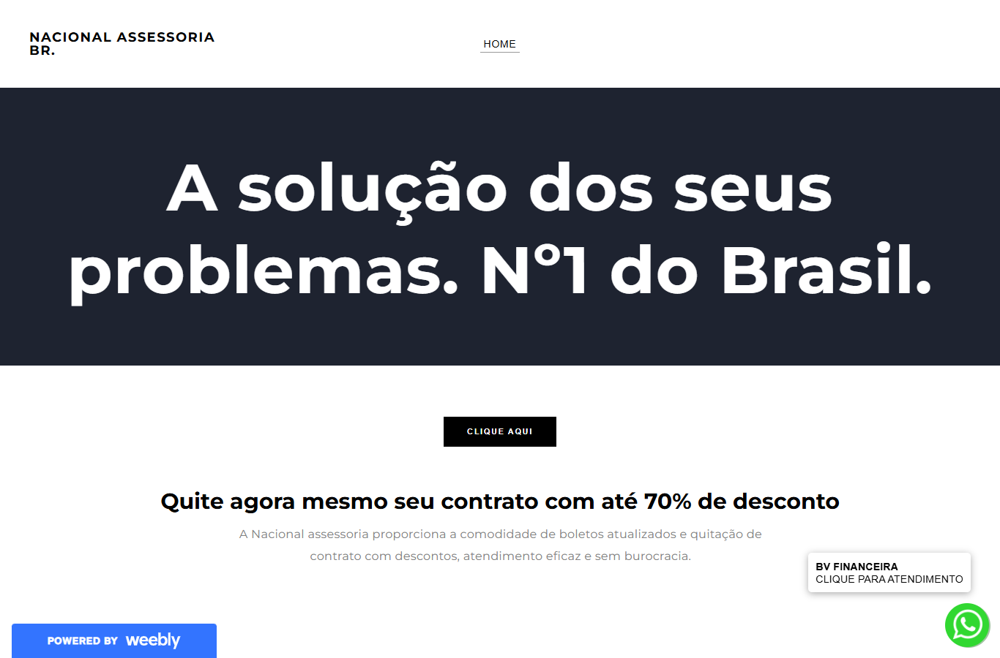
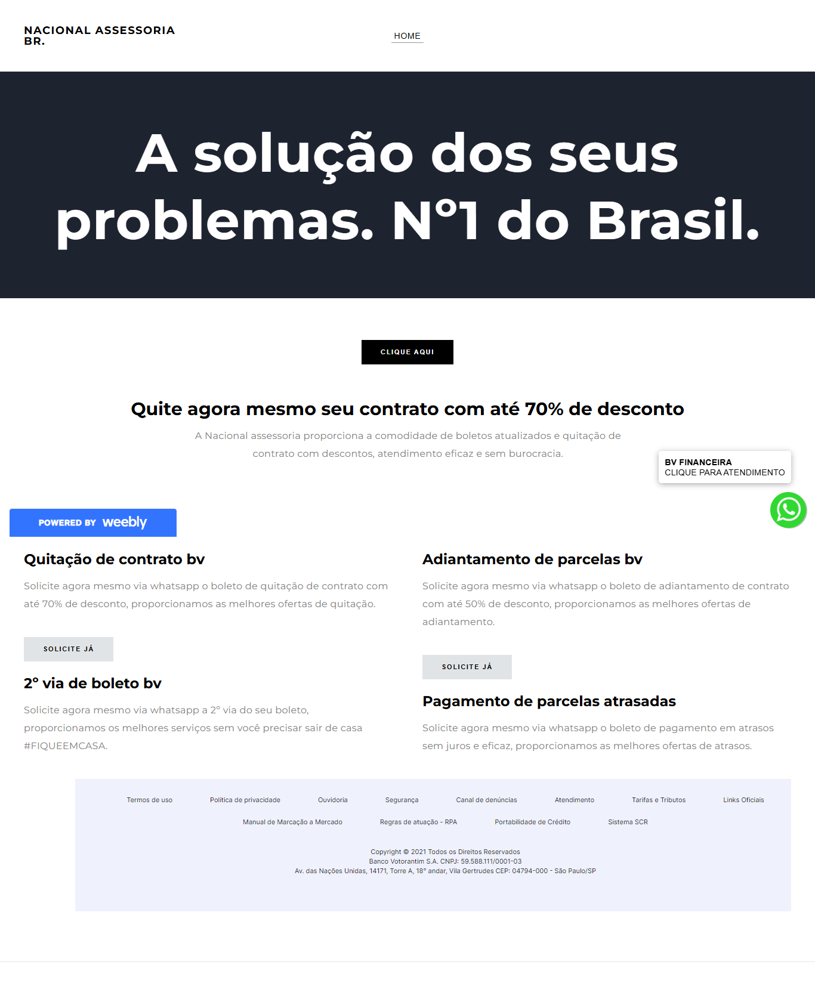

SIMIO · dossiê de candidato · campanha simio-20261119-174043-8bbc · gerado em 2026-11-19T21:22:03+00:00
https://nacionalassessoriabrasil.weebly.com/
STRONG_INDICATION Prioridade HIGH · Cenário D_STRONG_IMPERSONATION · Revisão humana: PENDING
Este dossiê apresenta indícios para apoio à auditoria. Não constitui conclusão regulatória. As conclusões automatizadas devem ser verificadas contra as evidências brutas abaixo (screenshots, catálogo e arquivos com hash). Conteúdo de terceiros é exibido como texto; links não são clicáveis por segurança.
A página apresenta múltiplos indícios graves de personificação e confusão de marca (D_STRONG_IMPERSONATION). Embora utilize o título 'NACIONAL ASSESSORIA BR.' em uma hospedagem gratuita (Weebly), oferece exclusivamente emissão de 2ª via de boleto, adiantamento de parcelas e quitação de contratos do Banco BV com promessa de até 70% de desconto via WhatsApp. Além disso, o botão flutuante de WhatsApp intitula-se diretamente 'BV FINANCEIRA - CLIQUE PARA ATENDIMENTO' e o rodapé da página exibe (como imagem inserida) os dados cadastrais oficiais do próprio Banco Votorantim S.A. (CNPJ 59.588.111/0001-03 e endereço oficial), sem qualquer identificação da empresa terceira responsável. [Revisor: CONFIRM] A hipótese do analista é integralmente confirmada pelas evidências. A página hospedada no Weebly ('Nacional Assessoria Br.') oferece exclusivamente serviços sensíveis de emissão de 2ª via de boleto, adiantamento e quitação de contratos do Banco BV com promessas de até 70% de desconto via WhatsApp (E-HEAD-2, E-HEAD-3, E-HEAD-4, E-HEAD-5). O widget flutuante de atendimento apresenta-se diretamente como 'BV FINANCEIRA - CLIQUE PARA ATENDIMENTO' (E-TXT-009, E-TXT-010, E-SHOT-VIEWPORT), e o rodapé da página exibe uma imagem estática copiando o rodapé institucional, o aviso de copyright, o endereço e o CNPJ oficial do Banco Votorantim S.A. (E-SHOT-FULL), sem qualquer transparência ou identificação da real entidade operadora da página.


| Ref | Tipo | Local | Conteúdo |
|---|---|---|---|
| E-URL | domain | url | URL final: https://nacionalassessoriabrasil.weebly.com/ (domínio: nacionalassessoriabrasil.weebly.com) |
| E-DISC-001 | text | search_index | Índice de busca (grounding): weebly.com — **[Weebly - "Nacional Assessoria BR"](https://vertexaisearch.cloud.google.com/grounding-api-redirect/AUZIYQHhgVySB5RZR1_Ac8k5DMva96gaA_iildoWMsy0vNqBLcfiKZuFBWDa1iapXp-1mPnrGnW8StsbIvMuewvOw2tNCRBeYe1ieuxzcBgfdRWyKitL9_vHuW8g19Vn1LPxRbPz0vsuBpvp)** (`weebly.com`): Utiliza botões de destaque com o título "BV FINANCEIRA - CLIQUE PARA ATENDIMENTO" direcionando para WhatsApp | Oferece emissão de 2ª via de boleto BV, pagamento de parcelas atrasadas "sem juros" e quitação de contratos com promessa de até 70% de desconto |
| E-SHOT-VIEWPORT | screenshot | viewport | evidence\Cc57f53b520\attempt-1\viewport.png (sha256 3578d40b4cdc88b7…) |
| E-SHOT-FULL | screenshot | page | evidence\Cc57f53b520\attempt-1\fullpage.png (sha256 332dac2d50bb3e0e…) |
| E-TITLE | title | head | NACIONAL ASSESSORIA BR. - Home |
| E-META-1 | meta | head | og:site_name: NACIONAL ASSESSORIA BR. |
| E-META-2 | meta | head | og:title: NACIONAL ASSESSORIA BR. |
| E-META-3 | meta | head | og:description: A Nacional assessoria proporciona a comodidade de boletos atualizados e quitação de contrato com descontos, atendimento eficaz e sem burocracia. |
| E-HEAD-1 | heading | page | A solução dos seus problemas. Nº1 do Brasil. |
| E-HEAD-2 | heading | page | Quite agora mesmo seu contrato com até 70% de desconto |
| E-HEAD-3 | heading | page | Quitação de contrato bv |
| E-HEAD-4 | heading | page | Adiantamento de parcelas bv |
| E-HEAD-5 | heading | page | 2º via de boleto bv |
| E-HEAD-6 | heading | page | Pagamento de parcelas atrasadas |
| E-FOLD | text | viewport (acima da dobra) | NACIONAL ASSESSORIA BR. Home A solução dos seus problemas. Nº1 do Brasil. clique aqui Quite agora mesmo seu contrato com até 70% de desconto A Nacional assessoria proporciona a comodidade de boletos atualizados e quitação de contrato com descontos, atendimento eficaz e sem burocracia. BV FINANCEIRA CLIQUE PARA ATENDIMENTO Powered by |
| E-CTA-1 | cta | page | CLIQUE AQUI <http://mon.net.br/18rltl> |
| E-CTA-2 | cta | page | SOLICITE JÁ <javascript:;> |
| E-CTA-3 | cta | page | SOLICITE JÁ <javascript:;> |
| E-CTA-4 | cta | page | Get Started |
| E-CONTACT-1 | contact | page | Enviar Mensagem <https://web.whatsapp.com/send?phone=11900000000> |
| E-CONTACT-2 | contact | page | Enviar Mensagem <https://wa.me/11900000000> |
| E-CONTACT-3 | contact | page | Feito no WhatsWidget <https://www.adamante.com.br/code/whatsapp-site/> |
| E-TXT-001 | text | page | A Nacional assessoria proporciona a comodidade de boletos atualizados e quitação de contrato com descontos, atendimento eficaz e sem burocracia. |
| E-TXT-002 | text | page | Quitação de contrato bv |
| E-TXT-003 | text | page | Adiantamento de parcelas bv |
| E-TXT-004 | text | page | Solicite agora mesmo via whatsapp o boleto de quitação de contrato com até 70% de desconto, proporcionamos as melhores ofertas de quitação. |
| E-TXT-005 | text | page | 2º via de boleto bv |
| E-TXT-006 | text | page | Solicite agora mesmo via whatsapp a 2º via do seu boleto, proporcionamos os melhores serviços sem você precisar sair de casa #FIQUEEMCASA. |
| E-TXT-007 | text | page | Solicite agora mesmo via whatsapp o boleto de adiantamento de contrato com até 50% de desconto, proporcionamos as melhores ofertas de adiantamento. |
| E-TXT-008 | text | page | Solicite agora mesmo via whatsapp o boleto de pagamento em atrasos sem juros e eficaz, proporcionamos as melhores ofertas de atrasos. |
| E-TXT-009 | text | page | BV FINANCEIRA |
| E-TXT-010 | text | page | CLIQUE PARA ATENDIMENTO |
| Dimensão | Sinal | Achado | Refs |
|---|---|---|---|
| VISUAL_IDENTITY | CONFUSION | Embora o topo utilize um template genérico da plataforma gratuita Weebly com o título 'NACIONAL ASSESSORIA BR.', o rodapé reproduz visualmente o bloco institucional do banco (links de Ouvidoria, Canal de denúncias, Sistema SCR e copyright do Banco Votorantim S.A.). | E-URL E-SHOT-VIEWPORT E-SHOT-FULL |
| DECLARED_COMMERCIAL_IDENTITY | CONFUSION | A página menciona 'Nacional Assessoria Br.' no topo, mas não apresenta CNPJ próprio e exibe no rodapé os dados cadastrais oficiais do Banco Votorantim S.A. (CNPJ 59.588.111/0001-03 e endereço da Av. das Nações Unidas). | E-TITLE E-TXT-001 E-SHOT-FULL |
| CORRESPONDENT_TRANSPARENCY | CONFUSION | Não há qualquer termo de transparência informando condição de correspondente ou parceiro independente nos termos da Resolução CMN nº 4.935/2021. | E-SHOT-FULL E-FOLD |
| INSTITUTIONAL_LANGUAGE | CONFUSION | O widget de atendimento assume diretamente o nome 'BV FINANCEIRA', e o rodapé apresenta links típicos de portal institucional ('Ouvidoria', 'Segurança', 'Canal de denúncias', 'Links Oficiais', 'Copyright © 2021 Todos os Direitos Reservados Banco Votorantim S.A.'). | E-TXT-009 E-TXT-010 E-SHOT-FULL |
| LOGO_USAGE | NEUTRAL | Não há uso do logotipo gráfico do Banco BV, apenas uso nominativo ('BV FINANCEIRA' e 'bv'). | E-SHOT-FULL E-TXT-009 |
| SERVICE_JOURNEY | CONFUSION | A jornada é inteiramente voltada à captação de clientes buscando 2ª via de boleto, quitação de contrato com até 70% de desconto e adiantamento de parcelas do Banco BV via WhatsApp ou link encurtado externo. | E-HEAD-2 E-HEAD-3 E-HEAD-4 E-HEAD-5 E-CTA-1 E-TXT-004 E-TXT-006 |
| CONTACT_CHANNELS | CONFUSION | Canal de contato via WhatsApp rotulado como 'BV FINANCEIRA CLIQUE PARA ATENDIMENTO' e CTA apontando para redirecionador externo (mon.net.br). | E-CTA-1 E-CONTACT-1 E-CONTACT-2 E-TXT-009 E-TXT-010 |
| CONSUMER_CONFUSION | CONFUSION | Elevado risco de indução a erro: o consumidor que busca 2ª via de boleto ou quitação do Banco BV visualiza um botão de WhatsApp intitulado 'BV FINANCEIRA' e o CNPJ oficial do Banco Votorantim S.A. no rodapé. | E-SHOT-VIEWPORT E-SHOT-FULL E-TXT-009 |
A página apresenta múltiplos indícios graves de personificação e confusão de marca (D_STRONG_IMPERSONATION). Embora utilize o título 'NACIONAL ASSESSORIA BR.' em uma hospedagem gratuita (Weebly), oferece exclusivamente emissão de 2ª via de boleto, adiantamento de parcelas e quitação de contratos do Banco BV com promessa de até 70% de desconto via WhatsApp. Além disso, o botão flutuante de WhatsApp intitula-se diretamente 'BV FINANCEIRA - CLIQUE PARA ATENDIMENTO' e o rodapé da página exibe (como imagem inserida) os dados cadastrais oficiais do próprio Banco Votorantim S.A. (CNPJ 59.588.111/0001-03 e endereço oficial), sem qualquer identificação da empresa terceira responsável.
Nenhum CNPJ ou razão social identificáveis no conteúdo coletado.
| Tipo | Valor | Ref | Contexto |
|---|---|---|---|
| domain | weebly.com | E-URL | |
| trade_name | NACIONAL ASSESSORIA BR | E-META-2 | |
| phone | 11900000000 | E-CONTACT-1 | |
| Índice de busca (grounding): weebly.com — **[Weebly - "Nacional Assessoria BR"](https://vertexaisearch.cloud.google.com/grounding-api-redirect/AUZIYQHhgVySB5RZR1_Ac8k5DMva96gaA_iildoWMsy0vNqBLcfiKZuFB | E-DISC-001 | ||
| Enviar Mensagem <https://web.whatsapp.com/send?phone=11900000000> | E-CONTACT-1 | ||
| Enviar Mensagem <https://wa.me/11900000000> | E-CONTACT-2 | ||
| Feito no WhatsWidget <https://www.adamante.com.br/code/whatsapp-site/> | E-CONTACT-3 |
Mapeamento indicativo para apoio à auditoria. Não constitui conclusão regulatória; a decisão definitiva pertence à auditoria.
Fonte: NORMATIVE
Art. 14. O contrato de correspondente deve estabelecer: [...] II - vedação à utilização, pelo contratado, de logomarca ou de outros atributos que sejam similares aos adotados pela instituição contratante em suas agências, postos de atendimento, sítio eletrônico na internet, aplicativo ou outras plataformas de comunicação em rede;
Hipótese: Uso de logomarca ou de atributos similares aos adotados pela contratante em seus canais. A norma disciplina correspondentes contratados; o responsável não foi identificado como correspondente.
Evidência observada: E-SHOT-FULL E-SHOT-VIEWPORT E-URL
Informação faltante:
Fonte: NORMATIVE
Art. 14. O contrato de correspondente deve estabelecer: [...] III - divulgação ao público, pelo contratado, de sua condição de prestador de serviços à instituição contratante, identificada pelo nome com que é conhecida no mercado, com descrição dos produtos e serviços oferecidos e canais de contato da instituição contratante, inclusive de sua ouvidoria, em local visível, em destaque e em formato legível, por meio de: a) sítio eletrônico do correspondente na internet, acessível na página inicial; b) aplicativo e outras plataformas de comunicação em rede do correspondente; [...]
Hipótese: Divulgação ao público da condição de prestador de serviços à contratante ausente, insuficiente ou sem destaque. A norma disciplina correspondentes contratados; o responsável não foi identificado como correspondente.
Evidência observada: E-CONTACT-1 E-CONTACT-2 E-CTA-1 E-FOLD E-HEAD-3 E-HEAD-5 E-SHOT-FULL E-SHOT-VIEWPORT E-TITLE E-TXT-001 E-TXT-009 E-TXT-010
Informação faltante:
Fonte: NORMATIVE
Art. 3º O correspondente atua por conta e sob as diretrizes da instituição contratante, que assume inteira responsabilidade pelo atendimento prestado aos clientes e usuários por meio do contratado.
Hipótese: Atendimento ao público prestado por meio do contratado em condições que podem não seguir as diretrizes da contratante. A norma disciplina correspondentes contratados; o responsável não foi identificado como correspondente.
Evidência observada: E-CONTACT-1 E-CONTACT-2 E-CTA-1 E-FOLD E-HEAD-2 E-HEAD-3 E-HEAD-4 E-HEAD-5 E-SHOT-VIEWPORT E-TXT-004 E-TXT-006 E-TXT-007 E-TXT-009 E-TXT-010
Informação faltante:
Se o responsável não for correspondente contratado, os indícios podem caracterizar uso indevido de marca ou fraude, fora do escopo da Res. 4.935: avaliar encaminhamento às áreas jurídica/segurança.
Limitações: requisitos contratuais/internos não fornecidos: mapeamento limitado ao texto normativo
Decisão: CONFIRM → STRONG_INDICATION / HIGH
A hipótese do analista é integralmente confirmada pelas evidências. A página hospedada no Weebly ('Nacional Assessoria Br.') oferece exclusivamente serviços sensíveis de emissão de 2ª via de boleto, adiantamento e quitação de contratos do Banco BV com promessas de até 70% de desconto via WhatsApp (E-HEAD-2, E-HEAD-3, E-HEAD-4, E-HEAD-5). O widget flutuante de atendimento apresenta-se diretamente como 'BV FINANCEIRA - CLIQUE PARA ATENDIMENTO' (E-TXT-009, E-TXT-010, E-SHOT-VIEWPORT), e o rodapé da página exibe uma imagem estática copiando o rodapé institucional, o aviso de copyright, o endereço e o CNPJ oficial do Banco Votorantim S.A. (E-SHOT-FULL), sem qualquer transparência ou identificação da real entidade operadora da página.
| Tema | Severidade | Questionamento | Refs |
|---|---|---|---|
| evidence_sufficiency | NONE | Os dados e evidências visuais sustentam plenamente a hipótese do analista. O rodapé com os dados oficiais do Banco Votorantim S.A. (CNPJ 59.588.111/0001-03) foi inserido como imagem (não extraído como texto no DOM, mas claramente visível em E-SHOT-FULL), configurando uso indevido de identidade institucional aliado à oferta de 2ª via de boleto e quitação via WhatsApp sob o rótulo 'BV FINANCEIRA'. | E-SHOT-FULL E-SHOT-VIEWPORT E-TXT-009 E-HEAD-3 E-HEAD-5 |
| domain_attribution | MEDIUM | Responsável pela página não identificado; a conclusão sobre a marca não pode ser atribuída a um estabelecimento específico. | E-URL |
| Fonte | Consulta / hipótese | URL original | Título / trecho |
|---|---|---|---|
| grounding | perfis, páginas ou links públicos em site mantidos por terceiros que oferecem financiamento, quitação ou crédito usando a marca Banco BV (bv financeira) como se fossem um canal oficial ou representante direto do banco H6-platform:site | https://nacionalassessoriabrasil.weebly.com/ | weebly.com **[Weebly - "Nacional Assessoria BR"](https://vertexaisearch.cloud.google.com/grounding-api-redirect/AUZIYQHhgVySB5RZR1_Ac8k5DMva96gaA_iildoWMsy0vNqBLcfiKZuFBWDa1iapXp-1mPnrGnW8StsbIvMuewvOw2tNCRBeYe1ieuxzcBgfdRWyKitL9_vHuW8g19Vn1LPxRbPz0vsuBpvp)** (`weebly.com`): Utiliza botões de destaque com o título "BV FINANCEIRA - CLIQUE PARA ATENDIMENTO" direcionando para WhatsApp | Oferece emissão de 2ª via de boleto BV, pagamento de parcelas atrasadas "sem juros" e quitação de contratos com promessa de até 70% de desconto |
Original: https://nacionalassessoriabrasil.weebly.com/
Final: https://nacionalassessoriabrasil.weebly.com/
| Artefato | Caminho | SHA-256 | Bytes |
|---|---|---|---|
| screenshot_viewport | evidence\Cc57f53b520\attempt-1\viewport.png | 3578d40b4cdc88b75d2b4e86e19cdda7234e58529256eb45cffc7aa53908e7dd | 80463 |
| screenshot_full | evidence\Cc57f53b520\attempt-1\fullpage.png | 332dac2d50bb3e0e49a65a2b98ba7efb620472f26e278836a3be977bbc7584ee | 161525 |
| html | evidence\Cc57f53b520\attempt-1\page.html.txt | 05635a77b22eb80006c95a5e5ded27744abdfed3a4149cac30bb487e18772f35 | 86262 |
| text | evidence\Cc57f53b520\attempt-1\text.txt | e0b026fc9923df12eaeb80c33b27c9b0e48d143591a7e812df2b537dc204ff37 | 1129 |
| page_data | evidence\Cc57f53b520\attempt-1\page.json | b61c0fa5b3bdbba5b0d631c81e9848cc8a147c30c2312e188c327f3dca906c83 | 5242 |
| Quando | De | Para | Nota |
|---|---|---|---|
| 2026-11-19T18:10:10+00:00 | DISCOVERED | QUEUED | prioritised (score 9.5) |
| 2026-11-19T18:10:21+00:00 | QUEUED | COLLECTING | |
| 2026-11-19T18:10:38+00:00 | COLLECTING | COLLECTED | |
| 2026-11-19T18:10:38+00:00 | COLLECTED | ANALYZING | |
| 2026-11-19T18:11:29+00:00 | ANALYZING | REVIEWING | |
| 2026-11-19T18:11:45+00:00 | REVIEWING | COMPLETED |